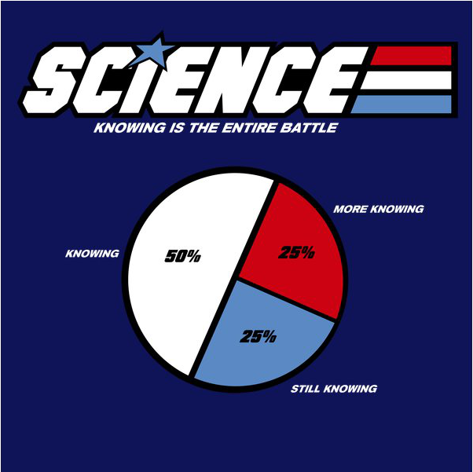

What's in a Vector?
Gabriel Becker, Luke Tierney, Tomas Kalibera
@groundwalkergmb
1 Some background
1.1 An aside
R-core is not the enemy, even when they 'refuse' to do what you want
- R's footprint is MASSIVE
- Breaking changes are serious business, generally not going to happen
- Think
stringsAsFactors,drop
- Think
- Despite this, I've found most (active) members receptive and pleasant
- Breaking changes are serious business, generally not going to happen
1.2 Our ultimate goal
Improve R without changing the final result of any R code
1.3 Previous "invisible" improvements to R
- copy-on-modify - Gentleman and Ihaka, R-core team
- byte compilation - Tierney [R 2.13+ ~2011-current]
- shallow copying - Lawrence and Tierney [R.3.1.0 ~2014]
2 The ALTREP framework
2.1 knowing things about vectors

2.2 Maybe, sometimes
A contiguous block of memory isn't the best way to store a particular vector
2.3 ALTREP
Two main concepts
- Some things get really easy given prior knowledge
- If vectors get smarter, R gets smarter
3 "Smart vectors"
3.1 Knowing is (a lot more than) half the battle
Easy to guess answer of:
sort(x)when you knowxis sortedis.na(x)when you knowxcontains noNAsmatch(5, x)/5 %in% xwhen you knowxis sortedx < 5when you knowxis sorted
3.2 ALTREP introduces
- the concept of vectors that know whether they
- are sorted
- have no NAs
- changes in base R to take advantage of 'smart' vectors
- changes in base R to automatically create 'smart' vectors when appropriate
4 Custom vector implementations
4.1 Compact sequences
Lets be real for a second - how many numbers do we need before we know everything about n:m?
4.2 Run-length encoded vectors
Quick, ask a 3rd grader: what's the sum of three 5s, two 7s, and three more 5s?
4.3 Deferred-conversion strings
Strings are expensive compared to numeric values. Only make the ones you need.
(this makes default rownames for big data.frames fast)
4.4 Virtual subsetting
Do I really need two copies of x to know what rev(x)[4] is?
4.5 What else?
5 Defining custom vector representations
5.1 Time for some lowish level details

5.2 ALTREP vectors have 2 parts
- SEXP containing alt representation of the data
- SEXP containing
R_NilValueor the vector expanded to traditional form
5.3 Once expanded part is non-null
5.4 An ALTREP class is
- An (implicit) specific low-level representation of vector data
- A set of methods which assume that representation to do things cheaper/faster
5.5 Mandatory methods
Length- Self explanatoryDataptr- "Escape valve" if R internals really need a pointerElt- retrieve value of element i without using dataptrSet_elt- Set the value of element i without using dataptrSort_check- Perform (and memoise) check for sortednessInspect- info to display when inspect internal is called
5.6 Metadata-related methods
Is_sorted- immediately return known sortedness infoNo_NA- immediately return known "no NAs" info
5.7 Fastpass methods
Is_NASumSort/OrderMatchMin/MaxWhich_min/Which_maxUnique
Defaults make use of sortedness and no NA info
5.8 Acknowledgements
- Luke Tierney
- Tomas Kalibera
- Michael Lawrence
- The R-core team
- You